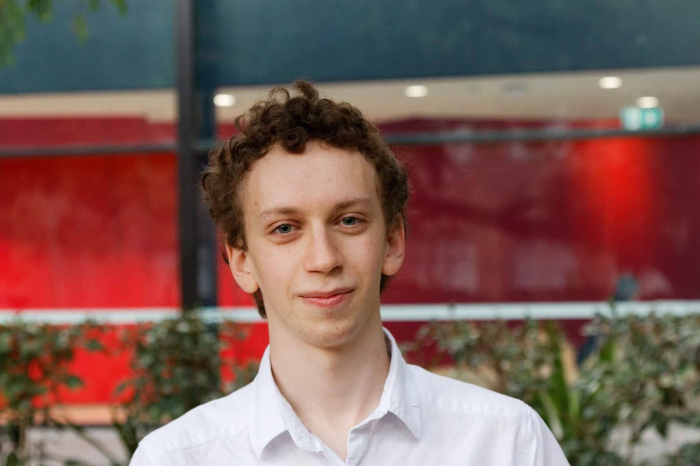

Hi I'm Andrew!
I'm a second Year Computer Science/Math student who's had an amazing time in CSE!
Why vote me for secretary of CSEsoc?
I'm an Experienced Society Leader:
- As the secretary of the Australasian Union of Jewish Students UNSW, I organised and wrote thorough notes for all of our executive meetings.
- I was a SciSoc camp leader, where I introduced hundreds of first years to UNSW, and helped a society organise an event with over 150 people.
- While I was VP (Coffee) of the Tea and Coffee Society, I helped grow the society by 25%, and provided delicious coffee to hundreds of people 🙂
I’m Active in the CSE community:
- Invited hundreds of extra CSE students to CSE events while part of the Social Media team. I also posted promotional jokes and images to CSESoc events, to get more people involved in CSE.
- As a CSE StRep this year, I helped put out the StuRep survey to give the faculty valuable feedback from students on their courses, facilities, and standard of education.
I really love Computer Science:
- I regularly go to ACM (Programming competition) training, and went to the divisional ACM contest.
- As a part time job, I’ve taught a primary school programming class, where I brought a group of people to no coding experience to being able to make basic programs.
Policies
1. Enforcing that heads and execs submit their topic to the meeting agenda in advance, to allow CSESoc executive meetings to run smoothly.
2. A fortnightly newsletter and Facebook post to highlight volunteering and subcomittee opportunities for students in CSESoc, to allow everyone to get involved in CSESoc.
3. Establishing a CSESoc alumni network in the form of a LinkedIn group, to encourage better camaraderie between graduates, and better opportunities for CSE students.
4. Meet personally to organise deadlines and plans for heads. Meeting up with each head individually to establish a semester plan and deadlines, and asking if they need help, in terms of making a new subcommittee or co-head.